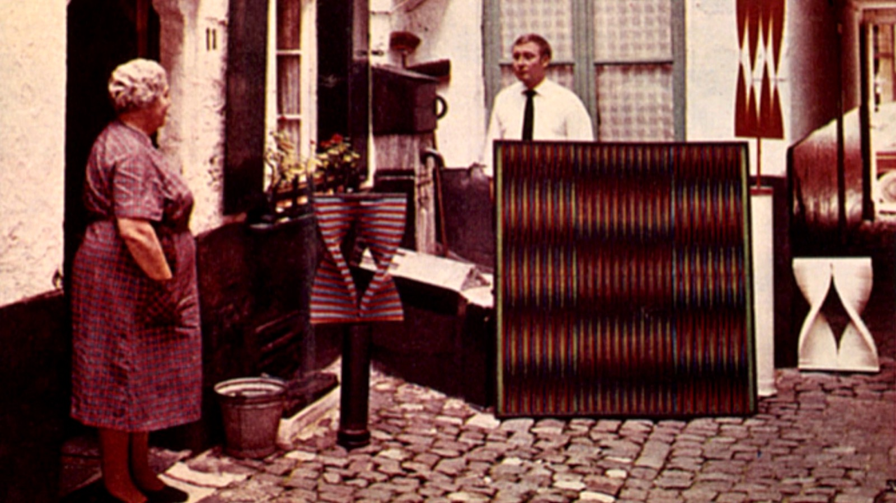

Walter Leblanc: gedreven door licht

De Belgische kunstenaar Walter Leblanc (1932–1986) was een van de pioniers van de naoorlogse avant-garde. Al vroeg stelde hij de traditionele schilderkunst ter discussie. Hij wilde af van de afbeelding, de penseelstreek en alles wat hij overbodig vond. Met gedraaide katoendraden op monochrome doeken ontdekte hij een nieuwe beeldtaal waarin licht, schaduw en beweging een hoofdrol speelden. Het was het begin van een levenslange zoektocht naar de essentie van kunst.
Als medeoprichter van de Antwerpse kunstenaarsgroep G58 en deelnemer aan het internationale ZERO-netwerk vond Leblanc aansluiting bij een generatie kunstenaars die de grenzen van de schilderkunst wilden verleggen. In 1965 werd zijn werk geselecteerd voor The Responsive Eye in het Museum of Modern Art in New York. Zijn experimenten met katoendraden en kunststofstroken groeiden uit tot monumentale metalen sculpturen, waarin het licht en de beweging van de toeschouwer het kunstwerk telkens een ander uitzicht geven.
Walter Leblanc: gedreven door licht reconstrueert het leven en werk van een eigenzinnige kunstenaar die voortdurend bleef experimenteren. Familieleden halen herinneringen op aan zijn persoonlijkheid en tomeloze werklust, terwijl kunstenaars en kunsthistorici, onder wie Luc Tuymans, Eva Wittocx en Johan Pas, zijn betekenis voor de Europese kunstgeschiedenis belichten. Met zeldzaam archiefmateriaal en beelden van zijn oeuvre toont de documentaire hoe Leblanc met een minimum aan middelen een maximum aan visuele ervaring wist te creëren.
- Regie en eindredactie
- Bertrand Lafontaine
- Productie
- Walter Leblanc Foundation
- Camera en klank
- Liese Lattrez, Michael Lombarts, Kris Van de Voorde, Jens Vanysacker
- Montage
- Michael Lombarts, Koen Vertommen
- Voice-over
- Sofie Rycken
- Genève · 12.12.2024
- Symposium Antwerpen · 09.10.2025
- Canvas · 14.01.2026
- CINEMATEK Brussel · 17.10.2026